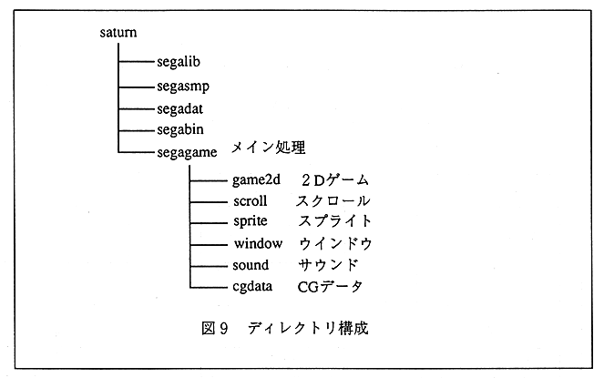

∙ All file names have names beginning with “smp_”. External variables and external functions start with “SM ?? _”. Specifically, it is attached as follows.
file name | function, beginning of variable name | content |
|---|---|---|
smp_main.c | SMMA _ | Main processing |
smp_logo.c | SMLO _ | Logo display |
smp_slct.c | SMSL _ | Select display |
smp_titl.c | SMTI _ | Title display |
smp_task.c | SMTA _ | Action management |
scroll / smp_scl0.c | SMSC _ | Scroll sample |
sprite / smp_spr.c | SMSP _ | Sprite sample |
window / sm_wind.c | SMWI _ | Window sample |
sound / smp_snd.c | SMSN _ | Sound sample |